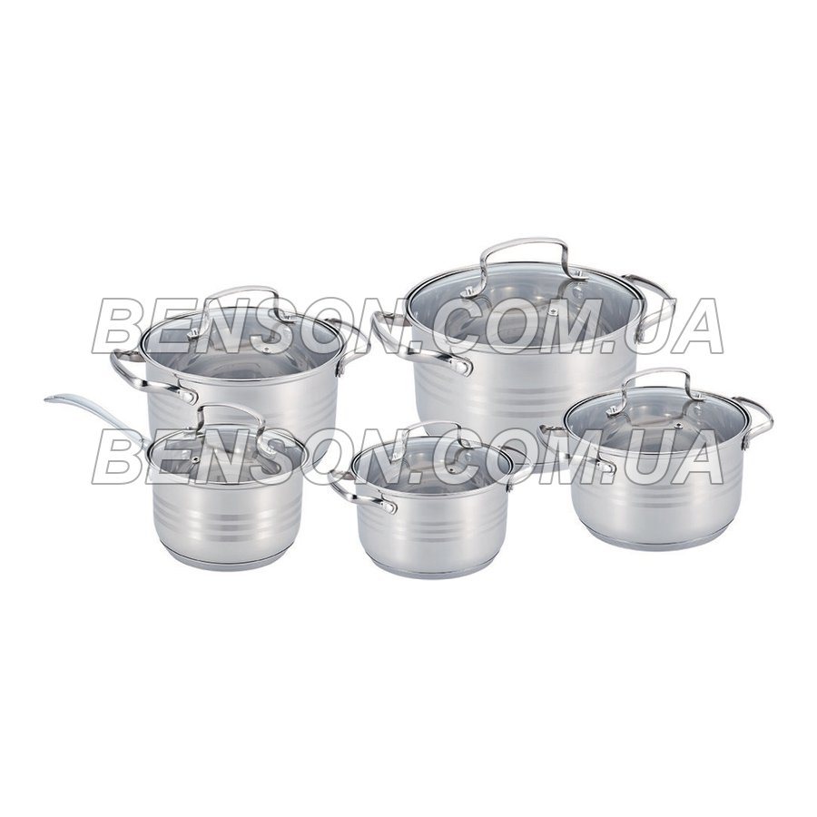

+38 (098) 367-84-36
+38 (066) 012-35-51
Написати у Viber

| Матеріал | Важка нержавіюча сталь |
| Ківш | 2,1 л |
| Каструлі з кришками | 2,1 / 2,9 / 3,9 / 6,5 л |
| Дно | 5 шарів |
| Мірна шкала | Є |
| Покриття | Глянцеве, матове |
| Форма | Пряма |
Набір посуду Benson BN-203 складається з 10 предметів із високоякісної нержавіючої сталі. Термодно з 5 шарів швидко нагрівається та добре зберігає тепло. Можна готувати з невеликою кількістю води й жиру — так зберігаються вітаміни, мінерали та смак.
Зручний обідок запобігає краплям під час переливання. Ручки не нагріваються. Легко мити вручну та в посудомийній машині.